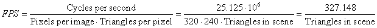

High Speed Hardware Raytracer
Daniel Beer (dbb28), Kashif Javed (kj49)
Procedure and Results
We developed the design in lab, compiling and testing after each iteration of the design. We used the DE2 development board and a VGA monitor to test the functionality of our design. Initially we developed a simple single triangle non-pipelined version of our project, then added additional features one at a time.
Our main test of functionality was done by compiling and visually examining the picture on the screen. To test the functionality of some of the individual modules, we used the simulator, passed in inputs, and checked the outputs for the correct values. We also used the SignalTap II Logic Analyzer by compiling it into our project and reading values through the Quartus II interface.
Initially we had many problems getting anything to show up on the screen, but after we got the first triangle on it became much easier. This was due to slight programming errors preventing the ray intersections from being calculated correctly, and these were found with careful debugging. Another problem we had was that triangles would appear to move around the screen, cycling through a number of different positions. We discovered this was an error due to our handling of pipeline stalls. We solved this by never stalling the pipeline, and instead just using a circular buffer to store values when a stall prevents them from being read immediately.
One problem that persists in our project is numerous phantom triangles. Though the geometry is rendered properly by our design, hundreds of other erroneous triangles are rendered behind it. When moving around the scene, one can see these triangles floating around in space. Also, the shading is only partially correct, with some triangles showing patches of incorrect lighting.
We believe these problems are due to overflow in a number of places in our fixed point calculations. If we had more time to work on this project, we would be able to find all the overflow errors and fix them, but due to the limited time of the project we were only able to fix some of them.
In general we are pleased with the performance of our ray tracer despite the geometry and shading errors. All other functions operate properly, and a scene can be loaded in and moved around. As the design is fully pipelines, we calculate one triangle-ray intersection per cycle. Our frames per second count is therefore:

For our test scene with 12 triangles, the system runs at over 27 FPS, which creates a very visually pleasing motion when moving the camera around without any flickering. As the number of triangles increases the frame rate goes down, but there is no flicker.
Conclusion
Despite the mathematical problems that arose in building our system, it was a fun a educational project for both of us. We learned a lot of lessons about creating deep pipelines, along with some computer graphics. We also gained experience debugging verilog projects using the Quartus II simulator and SignalTap II Logic Analyser. If we had more time, we are confident that we could work out the quirks in our system and get a proper mesh showing on the screen.